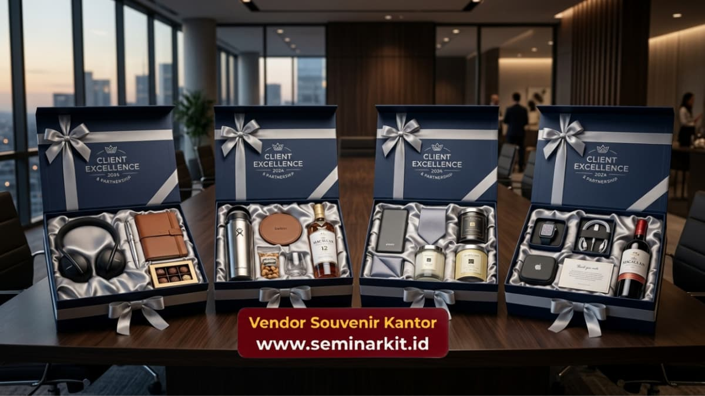

Ide souvenir untuk klien elegan yang paling direkomendasikan adalah produk fungsional berbahan premium seperti alat tulis metal, drinkware stainless steel, dan hampers eksklusif dengan kemasan mewah. Produk-produk ini memberikan kesan profesional sekaligus mencerminkan kualitas perusahaan di mata klien penting.
- Souvenir elegan sebaiknya menonjolkan kualitas material, bukan sekadar kuantitas produk.
- Alat tulis eksekutif dan drinkware premium menjadi pilihan paling aman untuk berbagai segmen klien.
- Hampers dengan kemasan mewah cocok digunakan untuk momen formal seperti akhir tahun.
- Sentuhan custom logo yang presisi meningkatkan kesan eksklusif tanpa terlihat berlebihan.
- Konsultasi kebutuhan dengan Vendor Souvenir Kantor membantu memastikan produk sesuai citra perusahaan.
Apa Saja Ide Souvenir untuk Klien Elegan yang Populer Saat Ini?
Ide souvenir untuk klien elegan yang populer saat ini berfokus pada produk berkualitas tinggi dengan desain minimalis, karena kesan mewah lebih ditentukan oleh detail finishing dibanding ukuran atau jumlah produk.
Set alat tulis eksekutif. Kombinasi pulpen metal dan notebook kulit sintetis dalam satu kotak kemasan memberikan kesan formal yang cocok untuk klien level manajerial hingga direksi.
Drinkware premium berbahan stainless steel. Tumbler atau termos dengan finishing matte dan cetak logo timbul memberikan kesan mewah namun tetap fungsional untuk aktivitas harian klien.
Hampers eksklusif bertema korporat. Kombinasi produk pilihan dalam kotak kemasan custom dengan pita dan kartu ucapan resmi cocok untuk momen akhir tahun atau perayaan tertentu.
Aksesori meja kerja premium. Organizer meja, jam meja metal, atau tempat kartu nama memberikan kesan profesional yang bertahan lama di ruang kerja klien.

Mengapa Kesan Elegan Penting dalam Souvenir Korporat?
Kesan elegan pada souvenir korporat penting karena secara langsung memengaruhi persepsi klien terhadap kredibilitas dan standar kualitas perusahaan pemberi souvenir.
Klien, terutama pada level pengambil keputusan, cenderung menilai kualitas kerja sama bisnis dari detail kecil, termasuk cinderamata yang diterima.
Souvenir dengan finishing rapi, kemasan presentatif, dan bahan berkualitas menunjukkan bahwa perusahaan memperhatikan detail dalam setiap aspek operasionalnya, termasuk dalam relasi non-transaksional seperti pemberian souvenir.
Selain itu, souvenir elegan yang tahan lama memiliki masa pakai lebih panjang dibanding produk dengan kualitas rendah.
Produk yang awet berarti nama dan logo perusahaan tetap terlihat oleh klien dalam jangka waktu lebih lama, memperkuat brand recall secara alami.
Bagaimana Memilih Material yang Memberi Kesan Mewah namun Tetap Fungsional?
Material yang memberi kesan mewah namun tetap fungsional umumnya berupa logam, kulit sintetis berkualitas, dan kaca atau keramik dengan finishing halus, karena tekstur material sangat memengaruhi persepsi nilai suatu produk.
Beberapa panduan pemilihan material:
- Pilih metal dengan lapisan matte atau brushed finish untuk kesan modern dan tidak mudah tergores.
- Gunakan kulit sintetis premium untuk notebook atau organizer agar tampilan lebih formal.
- Hindari plastik tipis yang mudah terlihat murah meski harganya lebih ekonomis.
- Pertimbangkan kombinasi material, misalnya metal dengan aksen kayu, untuk kesan lebih personal dan hangat.
Kombinasi material yang tepat membantu souvenir tetap terasa mewah tanpa harus menggunakan bahan yang berlebihan atau tidak praktis.
Bagaimana Cetak Logo Bisa Memperkuat Kesan Elegan Souvenir?
Cetak logo yang presisi dan proporsional dapat memperkuat kesan elegan souvenir tanpa membuat tampilan produk terlihat terlalu ramai dengan elemen promosi.
Beberapa teknik cetak yang umum digunakan untuk kesan premium meliputi laser engraving pada material metal atau kayu, emboss pada permukaan kulit sintetis, serta cetak UV pada kaca atau keramik. Teknik-teknik ini menghasilkan tampilan logo yang menyatu dengan produk, berbeda dari cetak sablon konvensional yang cenderung terlihat lebih sederhana.
Ukuran dan posisi logo juga perlu diperhatikan agar tidak mendominasi tampilan produk. Logo yang proporsional pada sudut atau bagian tertentu produk umumnya memberikan kesan lebih elegan dibanding logo berukuran besar di tengah produk.
Ide souvenir untuk klien elegan yang tepat mampu membangun kesan profesional sekaligus memperkuat hubungan bisnis jangka panjang.
Fokus pada kualitas material, kerapian finishing logo, serta kemasan presentatif menjadi kunci utama dalam menghadirkan souvenir yang benar-benar berkesan bagi klien.

Banner promosi: klik gambar untuk langsung terhubung ke WhatsApp tim sales.